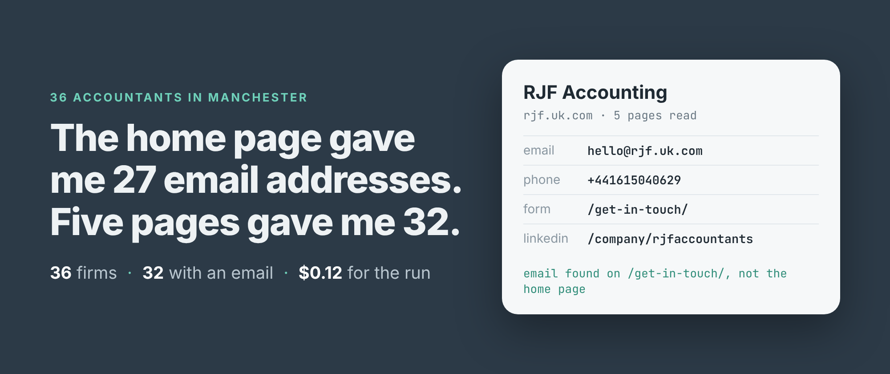
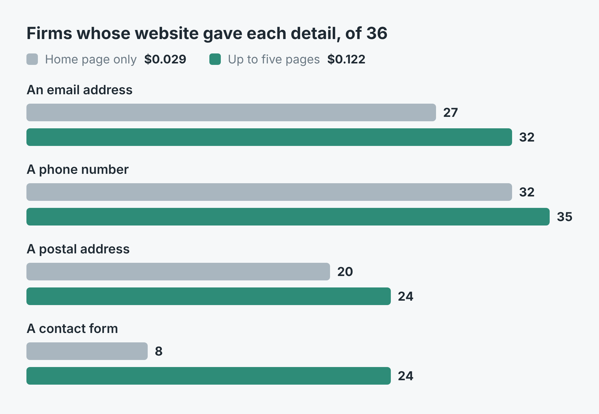
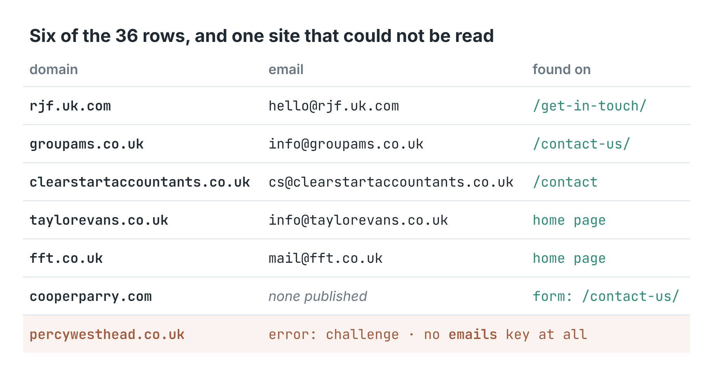

How to find the email address for a list of company websites (36 accountants in Manchester)
I wrote this with an AI assistant. The runs, numbers and code are real, and I checked them.

Is the home page enough? I had 39 websites of accountancy firms in Manchester, straight out of a Google Maps search, and I wanted an email address for each one. Reading only the home pages found one for 27 firms. Reading up to five pages per site found one for 32.
That's five more firms for four times the price. Whether it's worth it depends on what you're doing with the list, so here are both runs, side by side, with every number from them.
The list
The websites came from one Google Maps search, "accountants in manchester uk", 40 places deep. 39 of the 40 had a website on their listing. Maps listed one firm twice, once with its home page and once with its contact page, so the 39 addresses are 38 firms. 36 of them could be read, and every count below is out of those 36. The two that couldn't are near the end.
That's the kind of list people actually have: a column in a spreadsheet, some of it home pages, some of it deep links with tracking parameters still on the end. I pasted it in as it was.
Two runs, one setting apart
I build and run a contact scraper on Apify that reads a business's website and returns its emails, phone numbers, contact form, social accounts and postal address, one row per site. Its main setting is maxPagesPerSite: how many of each site's pages it may read. At 1 it reads the page you gave it. At 5 it also reads up to four more of that site's pages, the ones its links make likeliest to carry contact details: the contact page, the about page, the team page.
import { ApifyClient } from 'apify-client';
const client = new ApifyClient({ token: process.env.APIFY_TOKEN });
const run = await client.actor('simple.actor/website-contacts').call({
urls: ['ac-accounts.co.uk', 'rjf.uk.com', 'fft.co.uk'],
maxPagesPerSite: 5, countryHint: 'GB',
});
const { items } = await client
.dataset(run.defaultDatasetId).listItems();
for (const r of items) {
if ('emails' in r) console.log(r.domain, r.email);
}
countryHint: 'GB' tells it to read "0161 …" as a UK number. The full script, which reads a file of websites and writes a CSV, and a Python version are in the repo.
The one-page run took 2 minutes 33 seconds and read 37 pages. The five-page run took 4 minutes 7 seconds and read 161, an average of 4.4 for each address it could read. 22 of the 36 firms used all five pages.

Firms whose website gave each detail, of the 36 that could be read. Grey is the home page only, teal is up to five pages.What the extra pages found
Five firms gained an email address. Every one of them was on a page the first run never opened: /get-in-touch/, /contact-us/ twice, /contact and /about-us/. No firm lost an address, and for the 27 that had one on the home page, the best address stayed the same.
The bigger change was contact forms, from 8 firms to 24. A form sits on a contact page by nature, so reading the home page alone mostly misses it. Phone numbers went from 32 firms to 35, postal addresses from 20 to 24.
The number of distinct addresses doubled, from 32 to 65. Don't read that as twice the leads. One firm's team page alone accounted for 15 of the new ones, each a named member of staff. In all, at least 20 of the 65 belong to named people.

Six rows from the five-page run, and one of the two sites that could not be read.The email field is the one to use. It's the single best address per site: on the firm's own domain, a general mailbox before a person's. Here, 21 of the 32 were info@, four enquiries@ and three hello@. 28 of the 32 were on the domain of the website I gave, and the other four on another domain carrying the same firm's name.
What it cost
The price is $0.001 per run plus $0.00075 per page read, with Apify's platform costs included. A page that turns out not to exist isn't charged, and neither is a site that can't be read.
The home-page run was $0.001 + 37 × $0.00075 = $0.029. The five-page run was $0.001 + 161 × $0.00075 = $0.122. The 40 places from Google Maps cost $0.02 on top. So the five extra email addresses cost about 9 cents, and the 16 extra contact forms came with them.
What it got wrong
Two sites could not be read. One answered with a bot check ("Just a moment..."), and the other link from Google Maps led to a 404. Both came back as rows with error set and no emails key at all, so they can't be mistaken for firms with no email. The README suggests switching to a residential proxy for the bot check. I didn't try that here.
Four firms publish no email address anywhere the scraper looked. Each still had a phone number, and three had a contact form. That's an honest empty answer, not a miss, but it means 4 in 36 of these leads need a call or a form instead.
The full emails list keeps whatever the pages printed, not only the firm's own mailboxes. One firm's privacy page gave the data protection regulator's address. Another firm's contact page had a different company's address in its text, and its home page carried a mailto link to nfo@, missing its i. None of these became the best email, but if you export every address, you'll be exporting these too.
Two logos are a review widget's Google logo rather than the firm's own. Both came from the top of the page, which is where the scraper looks first. One firm's name came back as A&C, with the HTML entity still in it.
On a list like this one, five pages didn't double the email addresses. The home page already had them for 27 firms out of 36. If you only need one address per firm and you're watching the cost, maxPagesPerSite: 1 gets most of them. If you want contact forms, postal addresses, or the firms that hide their address on a contact page, read more pages.
The code is in simple-actor/website-email-scraper, in Node and Python. Both read a file of websites, one per line, and write a CSV with one row per site. The scraper is Website Contact Scraper on Apify. Put your own list in the file, and set COUNTRY to the two-letter code of the country your sites' phone numbers are written for.